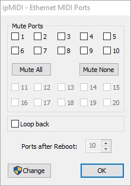
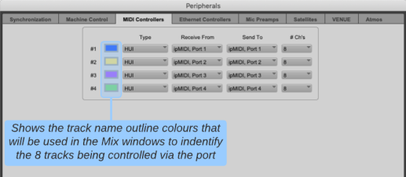
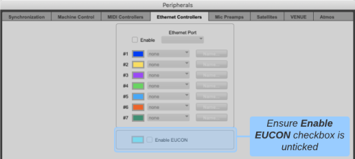

ipMIDI
ipMIDI Software
ipMIDI is an application that allows a standard network adapter to be used as multiple MIDI ports. It may be downloaded from https://www.nerds.de/en/download.html
The latest version of ipMIDI must be installed on the Mac or PC running the DAW you wish to control. Once installed, the computer must be restarted.
ipMIDI Monitor is used to set the number of emulated MIDI ports in use. Each port allows for 8 channels of control. The loop back function must be turned off. The picture below shows 10 ports and loopback turned off. Please note a reboot is required after making any changes in ipMIDI Monitor.

Network Addresses
ipMIDI works over an Ethernet connection between the SSL Live console and the computer running the DAW. The network cable should be connected directly to the Connectivity network port on the console or via network switches.
The Connectivity port must be set to an IP address or DHCP server that does not conflict with any other subnet used by the console (Pri or Sec Dante). The DAW network adapter must be set to the same subnet as the console's Connectivity adapter. Refer to the Network options section for more detail.
Notes:- The Connectivity port is also used for SOLSA and TaCo remote control. DAW control, SOLSA and TaCo may all be used simultaneously provided the network bandwidth allows.
- If Audinate's Dante Controller or Dante Virtual Soundcard are to be used on the same computer as the DAW, multiple network adapters will be needed. Dante and DAW control must be on different subnets for correct operation with SSL Live consoles.
- ipMIDI may be used for Events, Automation Input/Output Actions, DAW Control and Timecode. Different ipMIDI ports should be used for each.
Network Adapter Selection for ipMIDI
For computers with multiple network adapters, the computer must be configured to ensure the correct adapter is used. If your DAW computer has only 1 network adapter, this will be used by default and no further configuration is necessary.
ipMIDI transmits multicast UDP with a destination address of 225.0.0.37. In order to bind ipMIDI to a particular network adapter on a computer, you must alter the computer routing table using the following commands:
Windows
Open an elevated command prompt and type:
route add -p 225.0.0.37 MASK 255.255.255.255 <ip_address_of_desired_NIC>
e.g. route add -p 225.0.0.37 mask 255.255.255.255 192.168.1.1
Note: To find the IP address of the network adapter, first type ipconfig at the command prompt to list all network adapters.
This adds a persistent route to the Windows registry, which forces traffic with a destination address of 225.0.0.37 to be forwarded out of the network adapter with the IP address entered. Since this route is bound to the IP address of the network adapter, it will be necessary to repeat this should it become necessary to change the IP address of the computer, or should the computer be replaced or flat installed.
macOS
Open a terminal (Applications > Utilities > Terminal) and type:
route -n add -net 225.0.0.37 -interface <name_of_desired_NIC>
e.g. route -n add -net 225.0.0.37 -interface en1
You should then see the following response in the terminal: add net 225.0.0.37: gateway <name_of_desired_NIC>
Notes:
- It may be necessary to prefix the route command with sudo to run the command with super user privileges. You will be prompted to enter your password.
- networksetup -listallhardwareports can be used to obtain the correct interface name to use in the route command above.
- To find the MAC address go to Apple menu > System Preferences > Network. Select the interface you intend to use. Click the Advanced button. The MAC address is listed in the Hardware tab.
It is not possible to natively configure persistent routes on macOS, so the user will either need to enter this command after every boot, or create a start-up script which restores the route after the system is rebooted. Methods to create persistent static routes within macOS are dependent on the specific version of macOS, ensure the method used is applicable to the installed version of macOS.
Example persistent implementations may be found here: https://blog.dchidell.com/2018/07/23/persistent-static-routes-macos-high-sierra/
These examples must be edited to include the "route -n add -net 225.0.0.37 -interface <name_of_desired_NIC>" line from above.
Pro Tools Settings
In Pro Tools open Setup>Peripherals>MIDI Controllers. Enable the HUI type on the ports that will be used and then select the same ipMIDI ports that have been setup in the console's DAW Control setup page.

In Pro Tools open Setup>Peripherals>Ethernet Controllers. Ensure that the Enable EUCON option is unticked to enable metering on the console surface.
